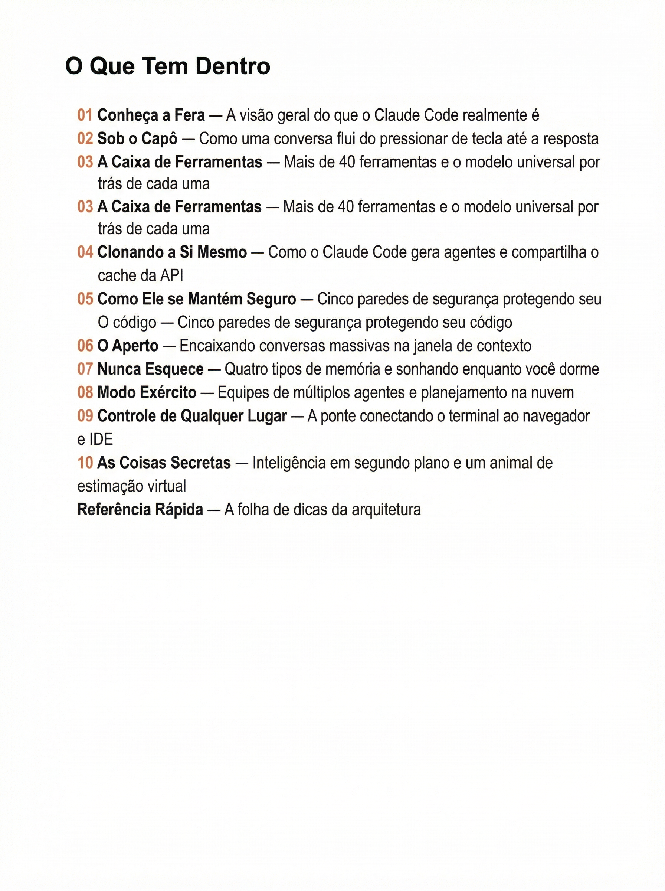

ê°Å¸âÂ¥ê¯Â¸Â Mais que um CLI ê¢â¬â O sistema operacional para desenvolvimento com IA
Chamar o Claude Code de CLI ê© subestimê¡-lo profundamente. Ele ê© um sistema completo de agentes (agent runtime), com mêºltiplos componentes integrados que permitem automatizar tarefas, gerenciar contexto, executar aê§êµes e interagir com ferramentas externas.
O Que o Claude Code Realmente êâ°
Nê£o ê© um chatbot ê¢â¬â ê© uma plataforma de orquestraê§ê£o de IA
Nê£o apenas escreve cê³digo ê¢â¬â lêª, executa, testa, coordena e lembra
Funciona como um sistema operacional onde o modelo ê© o kernel e as ferramentas sê£o os drivers
O valor real nê£o estê¡ em prompts ê¢â¬â estê¡ em configurar e utilizar o ecossistema: comandos, memê³ria, permissêµes e integraê§êµes
ê°Å¸â¡ Mudanê§a de Mentalidade
Quem trata o Claude Code como chatbot usa 10% da capacidade. Quem entende que ê© uma plataforma de orquestraê§ê£o ê¢â¬â com memê³ria, agentes, seguranê§a e extensibilidade ê¢â¬â consegue automatizar fluxos inteiros de desenvolvimento.
ê¢Å¡Â¡ A Stack Tecnolê³gica ê¢â¬â Bun, React, Ink e TypeScript
As escolhas tecnolê³gicas da Anthropic revelam prioridades claras: performance, developer experience e UI rica no terminal.
A Stack Completa
Bun: Runtime JavaScript ultrarrê¡pido, substituto do Node.js ê¢â¬â escolhido por performance e developer experience
TypeScript: Tipagem estê¡tica em 512 mil linhas ê¢â¬â essencial para manutenê§ê£o em escala
React + Ink: Sim, React no terminal! Ink renderiza componentes React como interface TUI (Text User Interface)
1.904 arquivos organizados em mê³dulos bem definidos
ê°Å¸âÅ Por Que Essas Escolhas?
Bun vs Node: Bun ê© atê© 4x mais rê¡pido em certas operaê§êµes e gera bundles menores
TypeScript vs JavaScript: Em 500K+ linhas, tipagem nê£o ê© luxo ê¢â¬â ê© sobrevivêªncia
React no terminal: Permite interfaces ricas e reativas sem sair do terminal
Modularidade: 1.904 arquivos com responsabilidades bem separadas
ê°Å¸â§ Os 8 Subsistemas ê¢â¬â Motor de Consulta, Ferramentas, Agentes e mais
O Claude Code ê© organizado em oito subsistemas principais que irradiam do nêºcleo. Cada um resolve um problema especêÂfico de orquestraê§ê£o de IA.

Os 8 Subsistemas
Motor de Consulta (Query Engine): Fala com a API do Claude e gerencia o ciclo de vida da conversa
40+ Ferramentas (Tools): Lidam com leitura/escrita de arquivos, comandos shell, busca de cê³digo
Agentes (Agents): Permitem gerar cê³pias de si mesmo para trabalhar em paralelo
Ponte (Bridge): Conecta terminal a navegador ou IDE para controle remoto
Memê³ria (Memory): Lembra sobre vocêª e seus projetos entre sessêµes
Seguranê§a (Security): 23+ verificaê§êµes para proteger seu sistema
Gerenciador de Contexto: Comprime conversas para caber na janela de contexto
Skills & Plugins: Tornam o sistema extensêÂvel com comandos personalizados
ê°Å¸â Decisêµes de Design ê¢â¬â Por que cada subsistema existe
Nenhum subsistema existe por acaso. Cada um resolve um problema real que surge quando vocêª tenta construir um agente de IA que funcione em produê§ê£o, com milhares de usuê¡rios simultê¢neos.
Problema ê¢â â Soluê§ê£o
Problema: Conversas precisam de estado ê¢â â Soluê§ê£o: Query Engine com instê¢ncia por conversa
Problema: Modelo precisa agir no mundo ê¢â â Soluê§ê£o: 40+ ferramentas padronizadas
Problema: Uma tarefa pode ser grande demais ê¢â â Soluê§ê£o: Subagentes paralelos
Problema: Terminal ê© limitado ê¢â â Soluê§ê£o: Ponte para browser/IDE
Problema: Modelo esquece entre sessêµes ê¢â â Soluê§ê£o: Sistema de memê³ria persistente
Problema: Execuê§ê£o de cê³digo ê© perigosa ê¢â â Soluê§ê£o: 5 camadas de seguranê§a
Problema: Contexto estoura ê¢â â Soluê§ê£o: Pipeline de compressê£o
Problema: Cada projeto ê© diferente ê¢â â Soluê§ê£o: Skills e plugins customizê¡veis
Fazer
- ✓ Separar responsabilidades em subsistemas distintos
- ✓ Modularizar com interfaces padronizadas
- ✓ Criar interfaces padronizadas entre componentes
- ✓ Pensar em seguranê§a desde o inêÂcio do design
Evitar
- ✗ Monolito sem separaê§ê£o de responsabilidades
- ✗ Lê³gica acoplada entre componentes
- ✗ Seguranê§a como afterthought
- ✗ Extensibilidade zero ê¢â¬â sistema fechado
ê°Å¸ââ Como os Subsistemas se Conectam ê¢â¬â Fluxo de dados entre componentes
Os subsistemas nê£o operam isoladamente. Dados fluem entre eles de forma coordenada ê¢â¬â sua mensagem passa por contexto, API, ferramentas e memê³ria antes de voltar como resposta.

Fluxo de Uma Mensagem
Entrada
Vocêª digita ê¢â â Skills & Plugins injetam contexto adicional
Contexto
Gerenciador de Contexto verifica se cabe na janela, comprime se necessê¡rio
API
Motor de Consulta envia para a API do Claude via streaming
Ferramentas
Claude decide usar ferramentas ê¢â â Sistema de Seguranê§a valida ê¢â â Ferramentas executam
Memê³ria
Resultados relevantes sê£o persistidos pelo sistema de memê³ria
Resposta
Resultado volta em streaming, Ponte retransmite para browser/IDE se conectado
ê°Å¸Å½Â¯ Por Que Entender a Arquitetura ê¢â¬â Usar melhor a ferramenta
Conhecer a arquitetura nê£o ê© curiosidade acadêªmica. êâ° a diferenê§a entre usar 10% e 100% do potencial da ferramenta.
Conhecimento = Poder
Saber sobre memê³ria ê¢â â configurar CLAUDE.md corretamente
Saber sobre permissêµes ê¢â â automatizar aprovaê§êµes com wildcards
Saber sobre agentes ê¢â â decompor tarefas para execuê§ê£o paralela
Saber sobre contexto ê¢â â usar /compact para economizar tokens
Saber sobre ferramentas ê¢â â entender o que cada uma faz e quando usar
Saber sobre seguranê§a ê¢â â trabalhar com confianê§a em projetos sensêÂveis
ê°Å¸âÅ Impacto Prê¡tico
Usuê¡rios que dominam comandos trabalham muito mais rê¡pido que quem usa sê³ prompts
CLAUDE.md curto e objetivo funciona como onboarding automê¡tico
Permissêµes automê¡ticas eliminam interrupê§êµes constantes
Decomposiê§ê£o de tarefas aumenta qualidade e eficiêªncia
/compact regular reduz custo significativamente
ê°Å¸â¡ 7 Boas Prê¡ticas
Manter o CLAUDE.md curto e objetivo
Usar comandos em vez de depender sê³ de prompts
Configurar permissêµes para evitar interrupê§êµes
Dividir tarefas complexas em etapas
Gerenciar contexto para reduzir custo
Usar /compact regularmente
Conectar ferramentas externas via MCP
ê°Å¸ââ¹ Resumo do Mê³dulo
Prê³ximo Mê³dulo:
1.3 - ê¢Å¡â¢ê¯Â¸Â Sob o Capê´: O Ciclo de Vida de uma Conversa